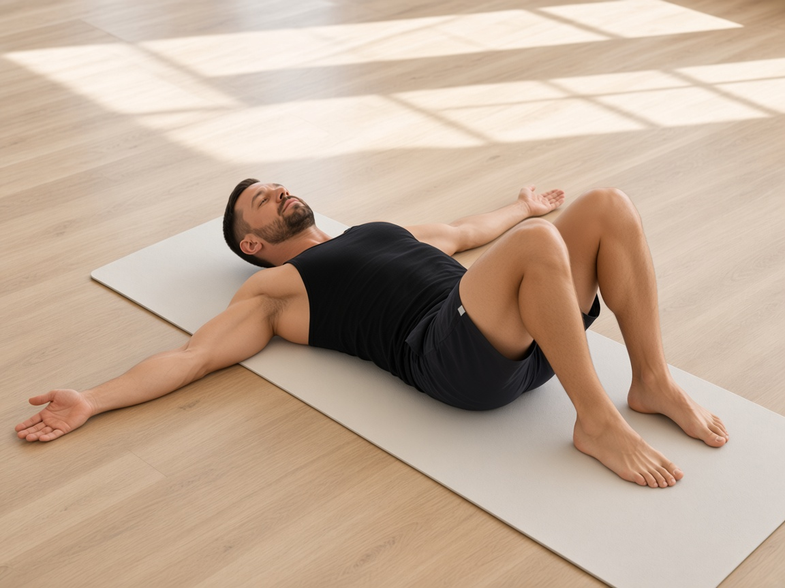
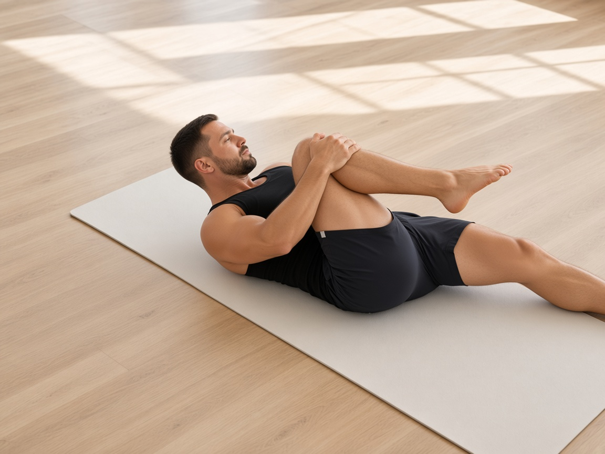

!
Только вне острой фазы
Комплекс выполняют после снижения острого болевого синдрома. При прострелах, онемении, слабости в ноге — сначала очная консультация врача. Курс НПВС — только по назначению, обычно 5–7 дней.
01 / 04
Artur Cheremisin
Домашняя памятка
Декомпрессия, снятие мышечного спазма и восстановление мобильности без осевой нагрузки на диск.
Комплекс выполняют после снижения острого болевого синдрома. При прострелах, онемении, слабости в ноге — сначала очная консультация врача. Курс НПВС — только по назначению, обычно 5–7 дней.
Пока грыжа «активна», глубокий точечный массаж поясницы может усилить воспаление. На этом этапе нужны мягкая декомпрессия и растяжение, а не давление на триггеры.
Ни до позы, ни во время вытяжения, ни при подъёме поясница не должна «включаться». Вес — на руках и ногах, кор полностью расслаблен.
Эффект от декомпрессии и мобильности накапливается. Делайте комплекс каждый день, спокойно, без рывков и без работы через острую боль.

Цель: снять глубокий зажим таза (часто вместе с грушевидной зоной), который тянет пояснично‑крестцовый отдел и усиливает компрессию.
Цель: расслабить erector spinae и глубокий мультифидус — паравертебральные мышцы, которые в спазме «сжимают» сегменты поясницы.
Цель: мягкая декомпрессия дисков L4–S1 без осевого давления — за счёт опоры на руки и расслабленного кора.
Важно: комплекс не «вправляет» грыжу. Он снижает мышечный зажим и осевую нагрузку, чтобы уменьшить раздражение и вернуть подвижность. При усилении боли в ногу — остановитесь и обратитесь к врачу.
02 / 04 · Упражнения
Разогрев и мобильность
Блок 3
 1 · Вверх
1 · Вверх
 2 · Бок
2 · Бок
Контроль: если поясница «включается» — уменьшите амплитуду рук и сильнее тянитесь макушкой вверх, а не поясницей назад.
03 / 04 · Декомпрессия
 1 · Старт
1 · Старт
 2 · Низ
2 · Низ
 1 · Старт
1 · Старт
 2 · Низ
2 · Низ
04 / 04

1 · Старт
2 · РастяжениеОстановка: если появляется онемение, слабость стопы или боль «стреляет» ниже колена — прекратите упражнение и обратитесь к врачу.